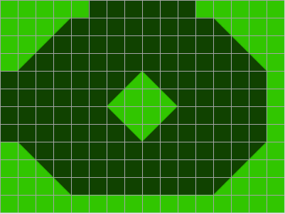
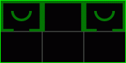

![[The blue base]](pics/tutorial-blue-base.png)
This tutorial tries to explain how to make a map for Outgun 1.0. See the map format specification for technical details of the commands.
The first thing to do is to make some plans about the map. Then we just make the map to fit the plans. How about this kind of a map? It has rectangular, triangular and circular walls as well as a wild flag.
We start the “coding” by adding the basic information about the map. Our map is 3×2 rooms. The title is simply Tutorial and I am the original author of the map.
Then there is the scale. The original 1×1 scale is quite confusing because a 0.1×0.1-unit sized wall is not square. We set the scale of 16×12. It means that the room is 16 units wide and 12 units high as it is seen in the picture.

P width 3
P height 2
P title Tutorial
P author Huntta
S 16 12We see that the three upper rooms are quite similar. They all have walls on the left, right and top edge. We shall make three rectangular walls. The first one starts at the top left corner and continues to the right edge of the room with 1 unit in thickness.
:basic
W 0 0 16 1
W 0 1 1 12
W 16 1 15 12The blue and red bases have a round wall and two walls at the bottom of the room.
:base
W 1 11 5 12
W 15 11 11 12
C W 8 4 4 3 90 270The circular wall is at point (8, 4), its outer radius is 4 and inner radius 3. We just want half a circle, starting at 90° and ending at 270°.
Those commands by themselves don’t do much. We need the X commands before those to specify the rooms where these walls will be created. The basic room type needs to be in rooms (0, 0), (1, 0) and (2, 0).
X basic 0 0 2 0
X base 0 0
X base 2 0
At this point we have walls in three rooms.

The rest of the rooms we have to make one by one. Let’s take next the room between the bases. We just need to add two rectangular walls there.
R 1 0
W 5 4 6 12
W 11 4 10 12
R 1 0 makes the next commands affect room (1, 0). Then we make two walls from the middle of the room to the bottom edge.
Now to the room below the blue base. It has round corners and a circle in the middle.
R 0 1
C W 8 6 2
C W 4 4 6 3 -90 0
C W 12 4 6 3 0 90
C W 4 8 6 3 180 270
C W 12 8 6 3 90 180
The second line is the circle in the middle of the room. The corners are parts of a ring, 90° each, made in the next four lines. The inner radius of the every corner is 3. The outer radius is big enough to reach the corner of the room area.
We need to add some rectangular walls to the left, bottom and top. Add the following code to the room (0, 1).
W 4 12 12 11
W 0 4 1 8
W 4 0 5 1
W 12 0 11 1
The first line is the wall at the bottom hole and the second line at the left hole. The two last lines are squares to make the top walls match the ones in the blue base room.
The room below the red base will mainly be made of triangles.
R 2 1
T W 8 4 8 8 6 6
T W 8 4 8 8 10 6This code makes a diamond using two triangles in the middle of the room. The first line is the left triangle and the second is the right one.
W 0 12 16 11
W 16 0 15 11
W 0 0 5 1
W 15 0 11 1
W 0 1 1 4
W 0 11 1 8These lines make six rectangular walls as the outer walls of the room.
T W 1 1 4 1 1 4
T W 15 1 12 1 15 4
T W 1 11 4 11 1 8
T W 15 11 12 11 15 8
The four triangles are at the corners. Our map has now five rooms out of six ready.
The last room has five rectangular walls at the edges and two at the middle. There is also a wall formed as half a ring in the middle of the room.
R 1 1
W 0 12 16 11
W 0 0 1 4
W 16 0 15 4
W 0 11 1 8
W 16 11 15 8
W 5 0 6 6
W 11 0 10 6
C W 8 6 3 2 90 270
After that room, the map is ready – except the flags and spawn points.
flag 0 2 0 8 4This is the red flag (team 0). It is in the room (2, 0) at (8, 4).
spawn 0 2 0 8 9
spawn 0 2 0 6 9
spawn 0 2 0 10 9
spawn 0 2 0 4 9
spawn 0 2 0 12 9
spawn 0 2 0 2 9
spawn 0 2 0 14 9These are the red spawn points. They are in the red base below the round wall.
flag 1 0 0 8 4
spawn 1 0 0 8 9
spawn 1 0 0 10 9
spawn 1 0 0 6 9
spawn 1 0 0 12 9
spawn 1 0 0 4 9
spawn 1 0 0 14 9
spawn 1 0 0 2 9
The flag and spawn points of the blue team (team 1). The coordinates are the same as for the red team but the room is obviously different. Here is a picture of the blue base where you can see the flag and the spawn points.
flag 2 1 1 8 6
This adds the wild flag (team 2) in the cover in room (1, 1).
To see how the textures work we change the ground texture at the wild flag cover. Add the following line to room (1, 0). The texture ID is 1 which means an alternative ground texture.
G 5.5 4 10.5 12 1Add the following lines to room (1, 1).
C G 8 6 2.5 0 0 0 1
G 5.5 0 10.5 6 1
The Tutorial map is ready. See the complete Tutorial map file.